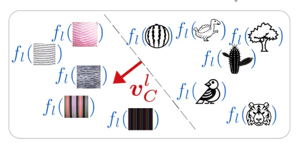

conceptual-machine
1. Training dataset
First, load the project that you used to create your model in
Teachable Machine
.
Open training project
Download example
2. Image model
Then, load the image model you created in
Teachable Machine
. This only accepts zip files uploaded locally.
Open model.zip
Download example
3. Concepts dataset
Next, load a project from
Teachable Machine
that labels concepts where you want to explore bias in your model, and a `random` class as well.
Open concepts project
Download example
4. tcav!
still experimenting...

paper
code
Explore concepts